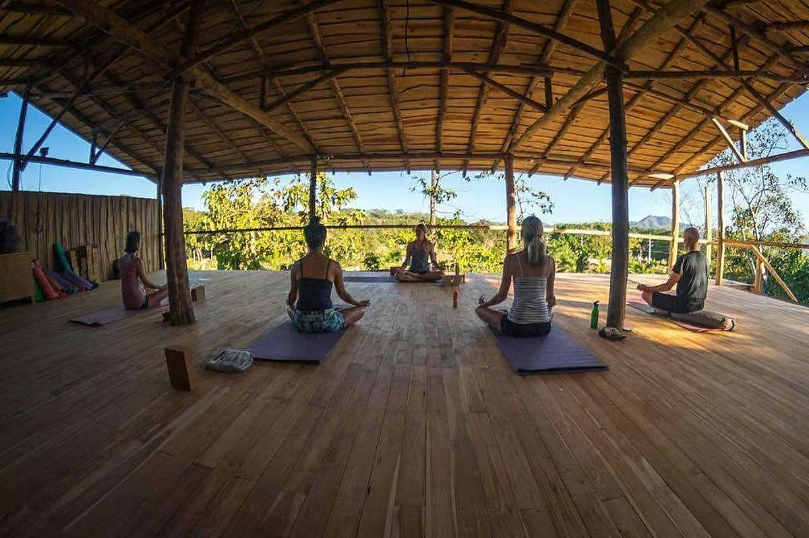
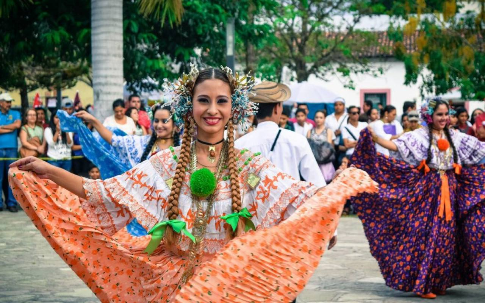
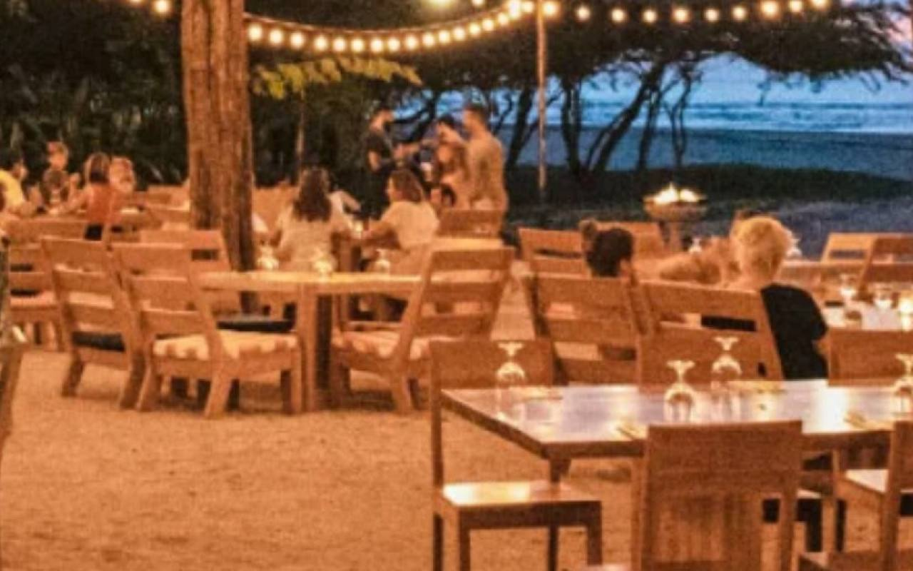
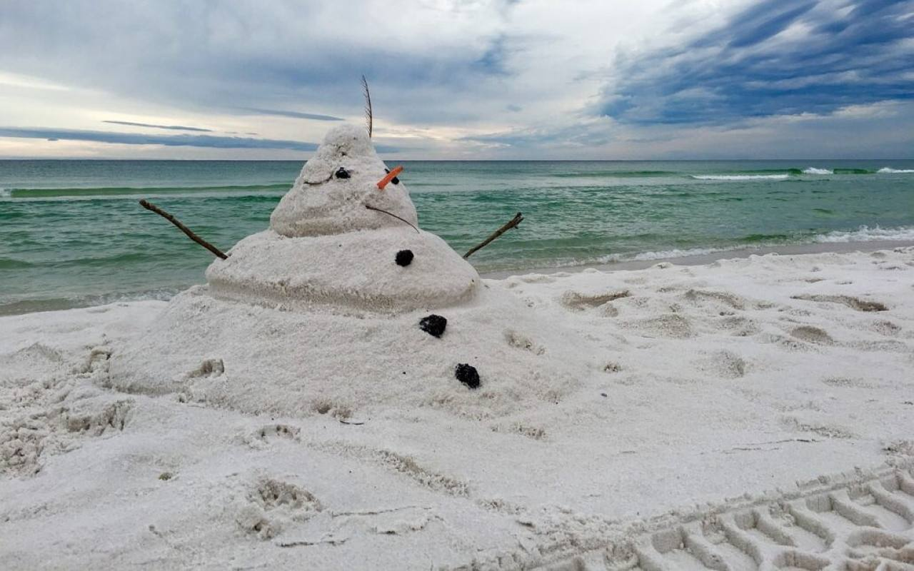
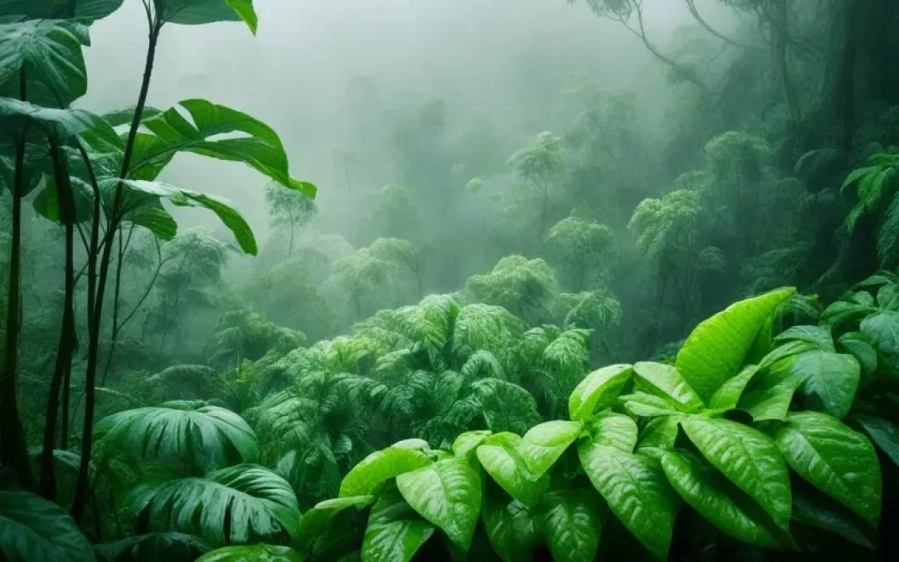
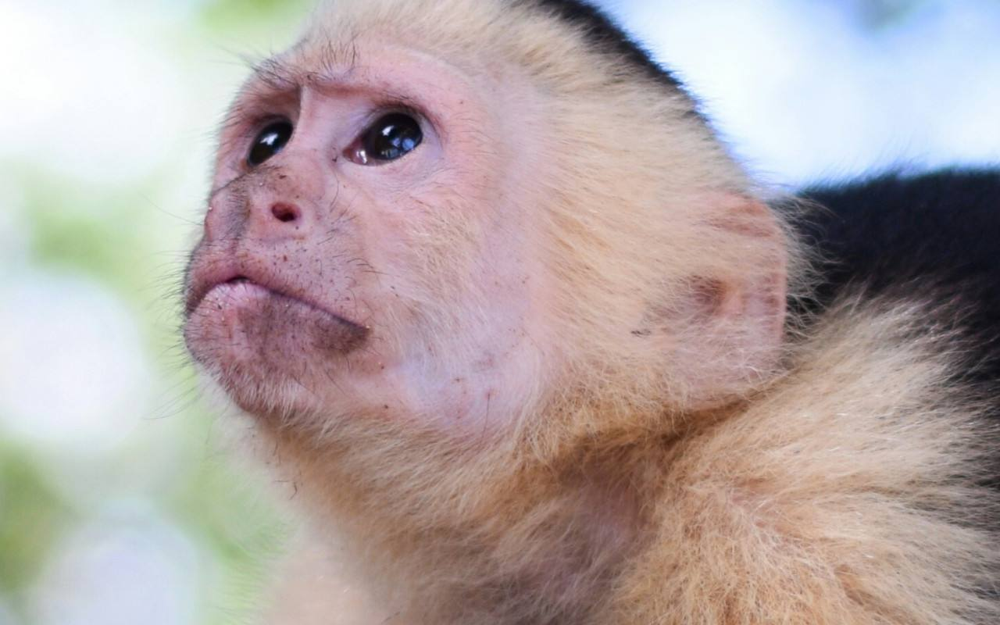

The Go Fish blog
Fishing reports, seasons, festivals, where to eat and what we have been up to since 2017.
Fishing reports, seasons, festivals, where to eat and what we have been up to since 2017.

As we approach September 15th, 2024, Costa Rica is gearing up for its biggest national celebration: Independence Day. This day marks the ann…

In 2024, Guanacaste continues to emerge as a leading destination for wellness travel, particularly in the areas of Tamarindo and Flamingo. K…

The grand reopening of Flamingo Marina in 2024 marks a significant milestone for the Guanacaste region, positioning it as a premier destinat…

Tamarindo, Costa Rica, has become a global hotspot for surfers, and 2024 promises even more action on the waves. Here’s a deeper look at the…

For 2023, Go Fish Costa Rica offers an impressive fleet for unforgettable fishing charters in Tamarindo. Whether you're after marlin, sailfi…

The excitement is building as Guanacaste Day, one of Costa Rica’s most cherished holidays, approaches on July 25th, 2024! This special day m…

After an exhilarating day of sport fishing, snorkeling, or ziplining in Tamarindo, Costa Rica, you'll likely be craving some delicious food …
March 2023 proved to be a standout month for billfishing in Costa Rica, solidifying the country's reputation as the "Billfish Capital of the…

Spending Christmas and New Year’s in Tamarindo, Costa Rica, offers a unique blend of tropical relaxation and vibrant festivities. As one of …

October in Tamarindo, Costa Rica, marks the height of the green season (or rainy season), making it a special time to visit this beautiful c…

Tamarindo, located in Costa Rica's beautiful Guanacaste province, is known for its vibrant surf culture, stunning beaches, and thrilling adv…

The year 2022 has marked a significant turning point for the tourism industry in Tamarindo, Guanacaste, as travelers return to one of Costa …